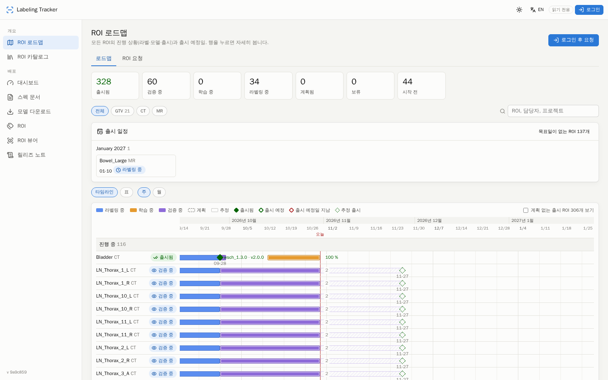

After this page you know the four scopes, which hub pages and APIs each one reaches, how patient IDs are shown (since v1.9 nothing is masked — U5), and how a labeler's OncoStudio login is tied to a hub account.
A hub account has a role (viewer, lead, admin) and a flag is_labeler.
Together with "not logged in" they form four scopes; every /ui/api route declares exactly one, and a
test walks the route table so no route can be undeclared.
| Scope | Who | Sees | Patient IDs | Writes |
|---|---|---|---|---|
| admin | role admin | everything, plus 관리: users, enums, ingest, system, account links (hub user ↔ NAS account), a project's validation-set reset | full | everything |
| data (lead) | role lead | all projects, assignments, the review queue, deliverables, sessions, labelers, patients, analytics, exports, datasets/splits, models, evaluations, releases, runs, reconciliation, training (new job, jobs, pipeline, policies), labeling rounds (pool, sampler, commit, pre-label, train, close, round policy), import | full | reviews, assignments, rounds, jobs, policies, import, deploy |
| data (viewer) | role viewer without is_labeler | the same pages, read-only | full (U5) | none |
| own (labeler) | role viewer with is_labeler | 내 작업: own assignments (project, patient, series, status with the round badge / pre-label mark / review-note mark, due) and their drawer (ROI set vs delivered, the hub review text, comments); 계정: own password and OncoStudio login binding. No other person's name or count anywhere (D95): reviewer, comment author and actor names are blanked by the server, the unbound-alias list is not sent. The former 추천 · 결과물 · 세션 · 라벨러 pages send a labeler back to 내 작업 (the APIs keep their own-row filtering) | full (U5) | change own password, bind own OncoStudio login, comment on own assignment, acknowledge a review comment |
| public | not logged in | v1.55 §72 (U141, D321): the hub shell and nav as after a login, limited to 개요 (로드맵, ROI 카탈로그, 릴리즈 노트 — moved there from 배포 on 2026-11-02) and the 배포 pages a general user may see (since v1.73 §87.1 under two entries: 대시보드 with 사용법 as its ? link · 릴리즈 › 패키지 릴리즈 · 모델 다운로드 · 스펙 문서), and this documentation; GET only, no usernames or display names in any reply (PUBLIC_READ, S47), the deploy reads forwarded as X-Hub-User: public / X-Hub-Role: general; model / release zips and every other route → 401 → the login | none shown; no usernames either | none |
U5 (2026-10-02): labelers see every patient's id, name and data. sees_patient_ids is true for every
role and mask_patient is not applied anywhere (lists, details, live snapshot, feed, exports, error
messages). Patient names are kept as an attribute of the case (imaging_case.patient_name, CONTRACT
§15): read from the DICOM header on the central share, sent by OncoStudio, or taken from the data list; phone numbers
are still never stored. The role rule (lead or admin) is kept in the code for the day the user flags an item that
must be treated securely.
Opening the hub without a login shows the same shell as after a login — top bar with a 로그인 button, theme and language toggles,
and a nav limited to what anyone may see: 개요 › 로드맵, ROI 카탈로그 and 릴리즈 노트 (in 개요 since 2026-11-02; its PDF reports
open for everyone), 배포 › 대시보드 · 릴리즈 — since v1.73 §87.1 three entries with tab strips (대시보드 · 릴리즈 · 관리; 모델 merged into 릴리즈,
/deploy/models redirects to /deploy/releases), of which an anonymous visitor sees 대시보드 (사용법 behind the
? of every 배포 header) and 릴리즈 with the 패키지 릴리즈, 모델 다운로드 and 스펙 문서 tabs (the pages the ai-pipeline site itself shows to a
general login, D321; since v1.70 §84.3 the former ROI · ROI 뷰어 are the ROI 카탈로그's Catalog and Viewer views —
/deploy/roi… and /deploy/roi-viewer… redirect there; its Registry view and 배포 › Model release need a lead). / opens the roadmap; any other address
asks for a login and returns there afterwards. The view is read-only and nameless: every write and every model / release zip needs a login
(the pages show a 로그인 후 다운로드 link), the server blanks usernames in anonymous replies, and GET /ui/api/meta answers
{me: null, now, version, contract_version, public: true}. The hub forwards the public 배포 reads to ai-pipeline as
X-Hub-User: public / X-Hub-Role: general (app/ui/routes_deploy.py deploy_read / public_path, S47);
a labeler's session is forwarded the same way on those reads, except the job poll jobs/{id}, which goes as the person (S52b, v1.61). On the hub the public set is the scope public-read
(app/ui/auth.py PUBLIC_READ / blank_names) on exactly GET /ui/api/meta, roi-board,
roi-board/{roi}/{modality}, roi-requests, registry/roi, deploy/_status and the proxy's GET;
every other /ui/api route answers 401 without a session (tests/test_public_view_v155.py walks them all). Every signed-in account, labelers
included, sees the public set as well. The earlier public overview page (D76: project progress bars, releases, pipeline pin) is retired; its
route GET /ui/api/public/overview stays one version, unused (since v1.61 its releases are released bundles only).
v1.61 §77.4 (S52): the proxy's releases/* is open to every signed-in scope, labelers included,
on every path and method (upload, analyze, create, mark released, withdraw, zips), forwarded as the person — a labeler as
X-Hub-Role: general with their own username, not as public; without a session only the release list
(GET releases) and one release page (GET releases/{v}) are read, as public. Personal API tokens
(/ui/api/me/tokens, any scope) open /api/v1/releases… as their owner and nothing else.
In the web (labeling-web, W37): web/src/lib/publicview.js (the role rank with public below viewer,
the public paths, the router's redirects, logout → /roadmap) and web/src/lib/nav.js (the eight entries carry the role
public); the top bar's 로그인 button in web/src/components/Shell.svelte, the zip links in
web/src/components/ZipLink.svelte, the login hint on a 401 in web/src/components/ErrorBox.svelte; checked by
web/tests/publicview.test.mjs and web/e2e/public_view.mjs (hub › web-public-view).

| Identity | Where it lives | Used for |
|---|---|---|
Hub account (web_user) | hub 관리 › 사용자 (admin creates; generated or typed password; since D94 the admin can also see and change every password); the user changes it on 계정 (POST /ui/api/my/password: current password checked, 10+ characters; every other session ends, the current one continues with a fresh cookie) | logging in to the hub; role + is_labeler (the admin can flag a labeler there too, without a binding) |
| OncoStudio login | OncoStudio's own authentication | identifies the labeler in every event OncoStudio sends; bound to a hub account through user_alias (계정 › OncoStudio 로그인 연결 by the user; an Excel name is linked for a labeler by a lead, 프로젝트 › board, or an admin) |
| Imported name → account (v1.23 §31, U30) | hub table of names (Excel, data list, C-FIND) → logins; a lead sees and adds them on 계정 › 이름 → 계정 (GET / POST /ui/api/aliases {name, username}; a refusal is the hub's sentence) | a re-import reads the name as that account, so a labeler stays LJM and never comes back as the Korean name; every page writes people by the account's display name (initials), pickers as LJM (ljm) |
| NAS account (uid/gid) | the executor host | training runs as the NAS account bound to the hub user (관리 › 계정 연결); unbound users get a readable refusal when they try to train |
| Service tokens (HS256) | ~/.config/… on the platform host, never in a repo | ai-pipeline ↔ hub, hub ↔ executor calls; the token carries the acting user's role for deploy permission |
An OncoStudio login that is not bound to a hub account still records its work (events are never dropped), but sees an empty 내 작업 list with the hint to bind at the hub.
Login checks an argon2 hash as before. In addition the hub keeps an admin-readable copy of every password
(web_user.password_vault, AES-256-GCM). On 관리 › 사용자 (admin › users) each row has an eye button that
shows the password inline with a copy button and the time it was stored, a 변경 (change) button (type one of 10+
characters, or 생성 generate — the generated one is shown once and is also visible through the eye afterwards) and the
라벨러 (is_labeler) flag. The copy is written whenever a password is set: an admin creates, sets or
resets it, the user changes it on 계정, or — for accounts that existed before this feature — the user's next
successful login; until then the row shows "—" (tooltip: 다음 로그인 후 표시, shown after their next login) and no
reset is forced.
| Fact | Where |
|---|---|
| The key | HUB_PW_KEK (base64, 32 bytes) only in ~/.config/oncolab/oncolab.env (production) and oncolab-dev.env (dev, a different key) on the platform host, mode 600, generated by deploy/setup.sh; never in the database or a repo. Without it the feature is off: the eye answers password vault not configured (503) and nothing is stored. |
| The audit | every reveal (GET /ui/api/admin/users/{u}/password) inserts admin_audit: who, whose password, when, from which address (never the password itself). Read it with the DB shell or the read-only role. |
| Who | role admin only; leads and viewers get 403. |
| The trade-off | anyone holding the key file and the database can read every password, and a password reused elsewhere leaks with it. Accepted for a closed-LAN team whose accounts are hub-only; the login page and 계정 say so (관리자는 계정 비밀번호를 볼 수 있습니다 — 다른 서비스의 비밀번호를 재사용하지 마세요). Reversal: drop the column and the key. |
| Scope | Menu | Notes |
|---|---|---|
| own (labeler) | 개요 · 배포 (the public set of §72, read-only — v1.55) · 학습 (Dashboard · Training — v1.60 §76: every job and model as a viewer sees them (U5: nothing masked); start jobs; cancel / stop one's own; no deploy) · Labeling (My works · Projects · ↳ the opened project · Models) · 계정 · 문서 (D95; v1.23 §32 gives labelers the app's Labeling navigation) | opens on My works; only their own rows and no other person's name; no live stream (the feed carries everyone's events); 계정 = own password + OncoStudio login binding with the D94 notice that administrators can see passwords |
| data (viewer) | 학습 (새 학습 · 작업 · 데이터셋 · 모델 · 평가 · 릴리스 · 파이프라인 · 실행 기록 · ROI 레지스트리 · 인구통계 대조 · AI 파이프라인 ↗) · Labeling (My works · Projects · ↳ the opened project · Models — the app's Labeling tab, v1.23 §32) · 기록 · 도움말 (D96) | opens on 학습 › 작업; masked patient IDs; action buttons (review, assign, train, deploy) are hidden or refused; 기록 is one page whose tabs are the former 실시간 · 환자 현황 · 결과물 · 작업자 · 세션 · 분석 · 할당 pages (their old addresses still work as deep links); 계정 is in the user menu (top right) |
| data (lead) | the same, plus Hub › Review · Import (web-only pages, moved out of Labeling by §32) | full IDs and all actions |
| admin | the same, plus 관리 (관리 · 계정 연결) | — |
| public | 개요 (로드맵 · ROI 카탈로그 · 릴리즈 노트) · 배포 (대시보드 · 릴리즈 › 패키지 릴리즈, 모델 다운로드, 스펙 문서; 사용법 = the headers' ? — v1.73 §87.1) · 문서, with a 로그인 button (v1.55 §72; the ROI 카탈로그's Viewer view is the former ROI 뷰어, v1.70) | read-only, no names, no zips; any other hub address sends to the login page and back after login |
A route outside one's scope answers 403 with a short message ("not available to your role", "not your work");
the page shows it as an error box, never an empty page. The server is the enforcement: hiding a menu entry is only a
convenience (tests/test_roles.py in the hub checks every route and the masking).
v1.23 §32 (D179): a labeler's web Labeling area follows the app's rules — every project in the list and its page
(ids in full once they hold a row in it), the board and its label checks, adding rows, marking finished, taking a row;
creating a project stays a lead's on the web and in the app (D181: both show New project, the hub answers
only a lead can create a project). GET /ui/api/me — and, from hub 1.27, the me of GET /ui/api/meta alike — carries can_review (D187: a lead / admin, or a labeler whose account may review — the row's assigned reviewer gives its verdict) and is_lead and
contract_version (the health value, as /api/v1/me); GET /ui/api/health is the
login-free twin of /api/v1/health.
v1.27 §40 (U46): assigning — Assign to…, Random…, Reviewer… and the add-series preview — needs
an account that may review (can_review as above), not the lead role; the hub answers anyone else 403
not available to your role. Project status, delete, Send to central, split and settings stay the lead
role's.
v1.29 §42.3 (D211): bulk approve (POST /ui/api/projects/{id}/review/bulk, the training view's
Approve selected / Approve all labeled) needs the same can_review, else 403; a lead / admin approves
any row, a labeler only the rows they are the reviewer of (the others come back refused not yours to review);
since v1.30 (§43.1, U53) one's own items are approved like any other, and the row's own labeler may be set as its
reviewer. Default pipeline (POST …/train-default, §43.3) needs can_review too;
its summary (GET) is readable by every signed-in scope. The live feed (/ui/api/live/feed, data scope) shows a
batch as one assignment line with d.origin "bulk" and d.n (the rows approved);
patient IDs in the refusals are masked for viewers like everywhere.
v1.36 §51 (U66, D227, D229): records are mine unless I am admin.
v1.61 §77.5 (W41, labeling-web): in the web, 배포 › 릴리즈 and 사용법 are in the public set (web/src/lib/deploy.js role
public, so anyone reads the list, a release page and the guide — zips still need a login); 새 릴리즈 carries viewer + own, so
every signed-in account sees it, labelers included, and an anonymous visitor is sent to the login; web/src/lib/publicview.js keeps
/deploy/releases… and /deploy/howto open to a labeler (OWN_KEEP). The release page's QA block (릴리즈로 표시, 철회) shows for
any signed-in user and never without a session. 계정 (web/src/pages/Account.svelte) has the API 토큰 card for every account.
v1.60 §76 (U151, D329): training for every labeler. Every route of /ui/api/training/* that was data scope is
own + data + admin, and so are the registry's read routes (datasets, models, evaluations, releases, runs, roi); a labeler sees every job
and model with the patient IDs a viewer sees (U5: nothing masked) and requester names, starts jobs (wizard, project page Train, default pipeline) and cancels /
stops / resumes / exports / reruns their own (the §58 / §69 requester rule; another person's job → 403). Still lead / admin: deploy
(POST …/jobs/{id}/deploy), pipelines, bindings (GET/PUT/DELETE …/training/bindings), POST /ui/api/registry/rois,
reconcile, the xlsx profiles, Save as project split…, valid-set reset. The hub submits every person's job under its service token with the
presser as requested_by; the executor runs a person without a NAS binding under the hub's binding (hub_vouches),
so no per-person binding or can_train flag is needed. The web shows 학습 › Dashboard · Training to labelers, Mine only on by default.
GET /api/v1/records answers every non-admin account (labeler, viewer, lead) with its own records:
no scope or scope=mine → mine, scope=all → 403 scope all is admin only./ui/api/me and /api/v1/me carry is_admin.loop_label_states (the training view's Labels to train on chips, §42.4) is a round-policy key:
saved by a lead (PUT …/round-policy); every signed-in scope reads it in GET …/loop.
Deleting a project (v1.19 §13, D157) needs a lead or admin and the admin action password; undeleting needs an admin and the password. The live feed and every list leave a deleted project out for every role. From v1.27 (§40, U47) its code may be taken by a new project; undeleting while a live project holds the code is refused (409).